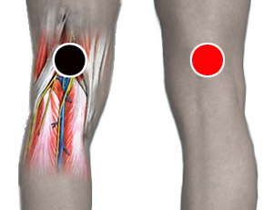

Nematodo
Par
suprapoliteo - supraplíteo

Generalidades:
El par detecta diversas especies de gusanos nematodos.
Los nematodos son gusanos de cuerpo liso; existen más de 25,000 especies clasificadas, algunas son parásitos de plantas, animales y humanos. En humanos las principales infecciones por nematodos son: filariasis, triquinosis, anisakis, toxocariasis y ascariasis, para la cual no hay un par específico.